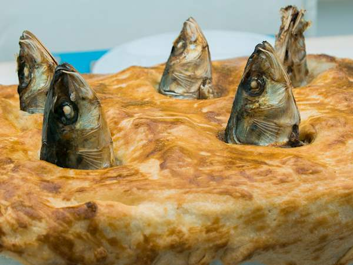

What is Stargazy Pie?
Stargazy pie (sometimes called starrey gazey pie,
stargazey pie and other variants) is a Cornish
dish made of baked pilchards (sardines), along
with eggs and potatoes, covered with a pastry crust.
Although there are a few variations using other
types of fish, the unique feature of stargazy pie is
fish heads (and sometimes tails) protruding through the
crust, so that they appear to be gazing to the stars.
Ingredients:
- 30g butter
- 1 onion
- 1 leek
- 3 rashers of streaky bacon
- 20g plain flour
- 3 tbsp white wine
- 250ml fish stock
- 300ml double cream
- pinch saffron strands
- 1 tsp salt
- small bunch parsley
- 3 eggs
- 200g puff pastry
- 6 small mackerel
Method:
- Preheat the oven to 200C/180C Fan/Gas 6.
- Melt the butter in a pan over a low heat, add
the onion, leek and bacon and cook over a low
heat until very soft but not browned.
- Stir in the flour to make a roux and cook for
a minute. Add the white wine and fish stock,
stir well to remove any lumps, bring to the boil,
then turn down to a simmer and cook for 5–10 minutes
until the sauce has thickened. Add the cream and bring
to the boil, stirring until you have a thick sauce. Add
the saffron, salt andsome pepper, stir in the parsley and
fold in the chopped hard-boiled eggs.
- Roll out the pastry to about 3mm/⅛in thick. Cut out a
long, 2cm/¾in wide strip of pastry. Dampen the rim of
a deep pie dish with water and press the pastry strip
onto the rim. Pour a little of the sauce into the dish
and arrange the mackerel on top, with their heads on
the edges of the dish. Pour over the remaining sauce.
- Cut out a piece of pastry a little bigger than the size
of the dish, then cut slits in the pastry large enough
to poke the mackerel heads through. Carefully lower
onto the pie dish, then, working around the dish one
fish at a time, poke the fish heads through the pastry.
Brush the pastry with beaten egg and bake for 40–45
minutes until the pastry is golden and crisp.